Βρείτε τα 3 λάθη
0/3
Ο κώδικας θέλει να προσθέσει τιμές, αλλά δεν δουλεύει. Πατήστε τις γραμμές που φταίνε.
function total(prices) {sum += prices[i];}}
Συμβουλή: κοιτάξτε τα εισαγωγικά, το <= και τα γράμματα.
Φτιάχνουμε ιστοσελίδες και web εφαρμογές στη Λάρισα. Δύο αληθινά έργα, και τα δύο online.
Πραγματικά έργα για πραγματικούς ανθρώπους, όχι πρότυπα. Διαλέξτε ένα για να το δείτε από κοντά.
01Online
Ιστοσελίδα για έκθεση αυτοκινήτων και κατάστημα ανταλλακτικών στη Λάρισα. Ο πελάτης ανεβάζει τις αγγελίες του στο car.gr, και η ιστοσελίδα τις δείχνει μόνη της.
Ανοίξτε την ιστοσελίδαΤο κοντέρ Η αρχική: το λογότυπο ως κοντέρ.
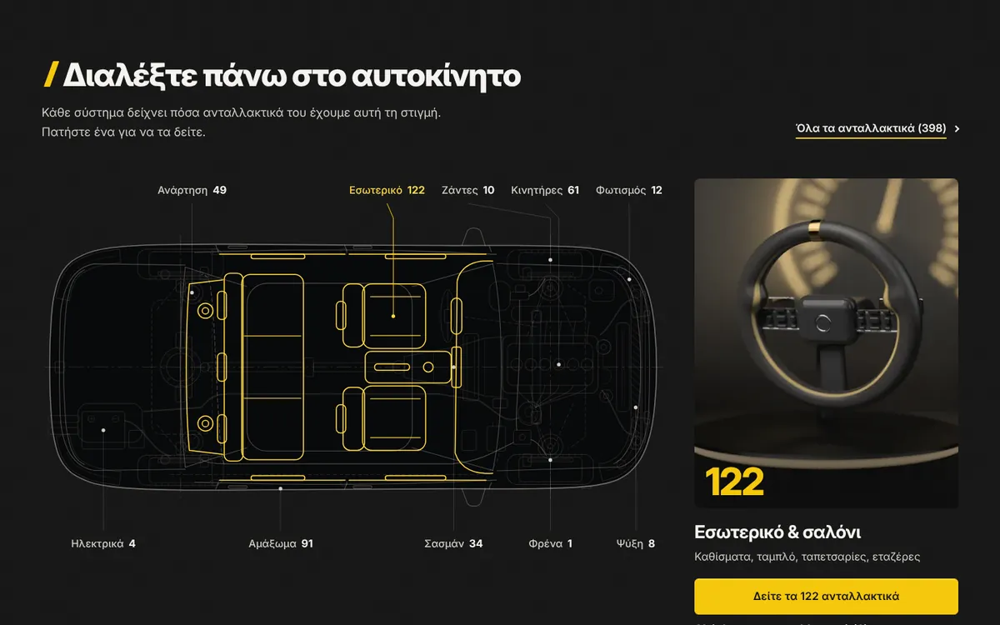
Ακτινογραφία Το αυτοκίνητο σε ακτινογραφία, για να βρίσκετε το ανταλλακτικό.
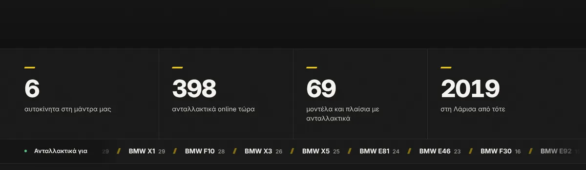
Ζωντανοί αριθμοί Αριθμοί που μετρούν ζωντανά, και ταινία με τα μοντέλα.
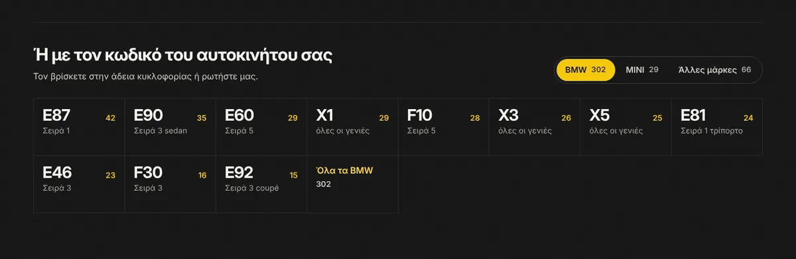
Κωδικός πλαισίου Ανταλλακτικά με τον κωδικό του αυτοκινήτου.
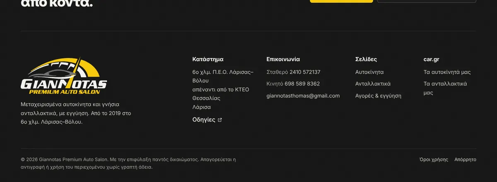
Τέλος σελίδας Το τέλος κάθε σελίδας: κλήση και οδηγίες.
Ό,τι πουλιέται και κατεβαίνει από τις αγγελίες, φεύγει και από την ιστοσελίδα, μόνο του.
Πατάτε πάνω στο σύστημα, στα φρένα ή στο εσωτερικό, και βλέπετε τα ανταλλακτικά του.
E90, F10, R56: η αναζήτηση καταλαβαίνει και ελληνικά και λατινικά γράμματα.
Ψηφιοποιημένο από φωτογραφία σε καθαρές γραμμές, με τη βελόνα να κινείται σαν κοντέρ.
Σταθερό ή κινητό, με το ωράριο δίπλα, και φόρμα για ραντεβού ή δοκιμή.
Κάθε αυτοκίνητο έχει δικό του τίτλο, φωτογραφία προεπισκόπησης και θέση στο sitemap.
Content-Security-Policy, HTTPS, έλεγχος κάθε αιτήματος πριν φτάσει στο car.gr.
54 αυτόματοι έλεγχοι, μεγέθη από 320 έως 1920 pixels, μετρημένα 60 καρέ το δευτερόλεπτο.
Σύρετε τη λαβή. Αριστερά μια παλιότερη έκδοση με φωτεινή επιγραφή, δεξιά η σημερινή: το αληθινό λογότυπο, ματ μαύρο, γράμματα που διαβάζονται.
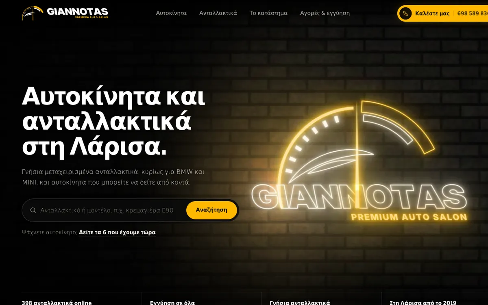
25εκδόσεις μέχρι να είναι όπως πρέπει
54αυτόματοι έλεγχοι πριν από κάθε παράδοση
60καρέ το δευτερόλεπτο στο scroll, μετρημένα
Από την πρώτη αρχιτεκτονική μέχρι αυτό που ήθελε ο πελάτης. Σύρετε τη γραμμή.
Φτιαγμένο με HTMLCSSJavaScriptVercel FunctionsPlaywrightPython
02Online
Ανεπίσημη ιστοσελίδα για το 7ο ΕΠΑΛ Λάρισας, το σχολείο μας. Ό,τι χρειάζεται ένας μαθητής μέσα στη μέρα, σε ένα μέρος.
Ανοίξτε την ιστοσελίδαΖωντανό ρολόι Η αρχική, με ζωντανό ρολόι και κουδούνια.
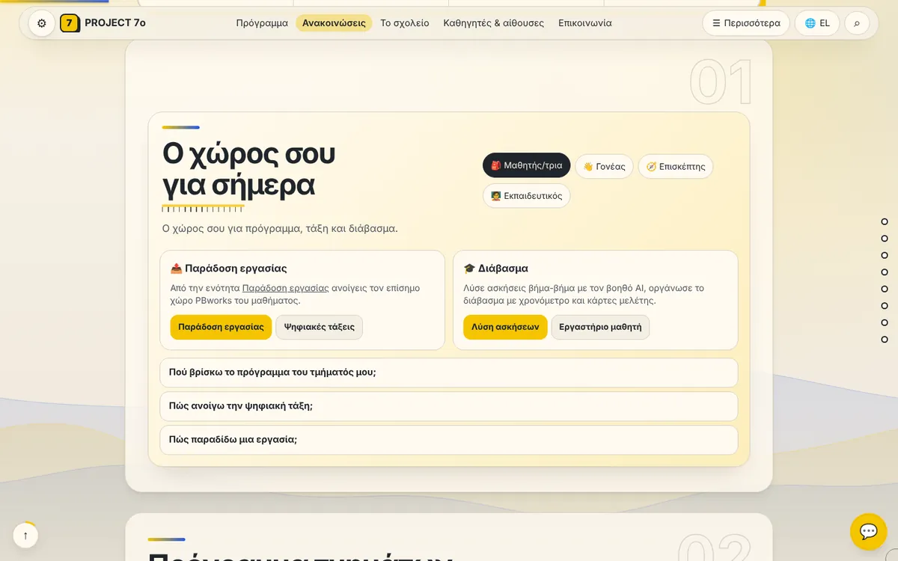
Ο χώρος σου Ό,τι χρειάζεται ο μαθητής για σήμερα.
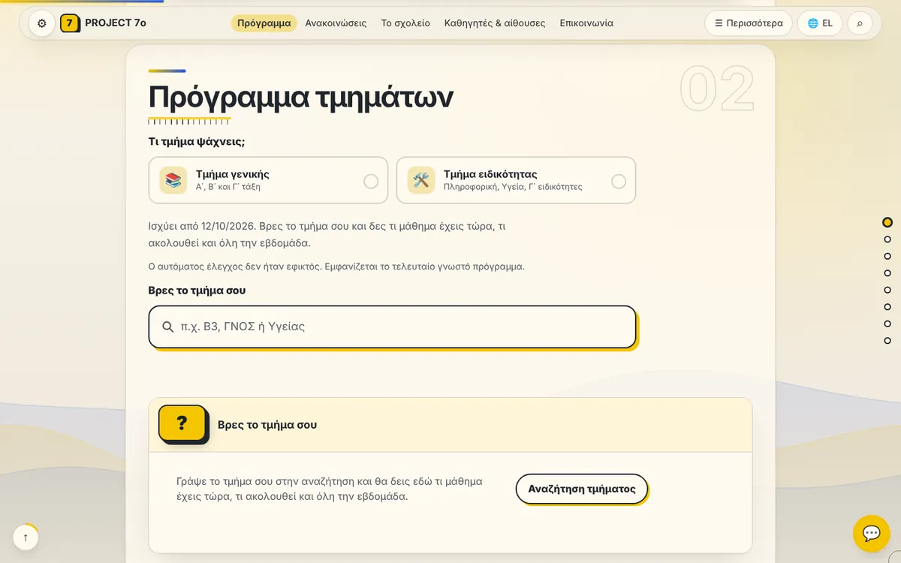
Πρόγραμμα Το πρόγραμμα κάθε τμήματος.
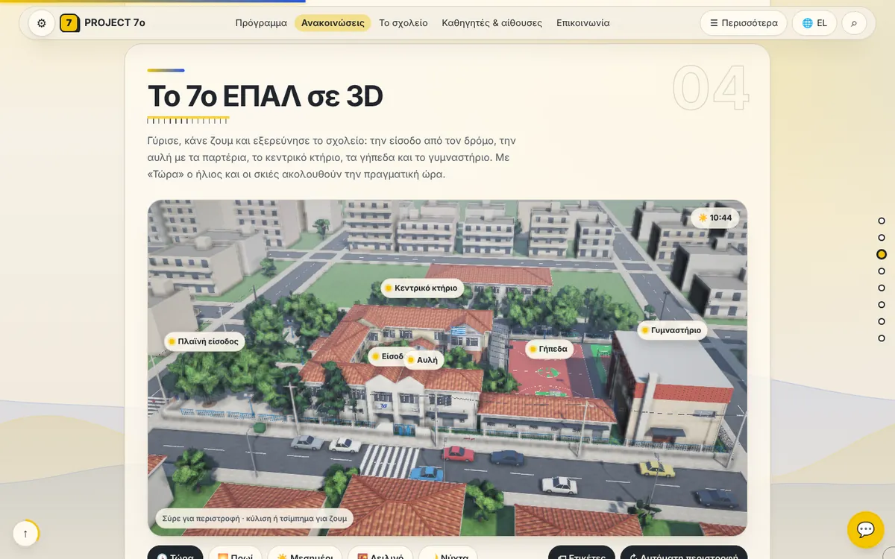
Το σχολείο σε 3D Γυρίστε και εξερευνήστε την είσοδο, την αυλή και τα κτίρια.
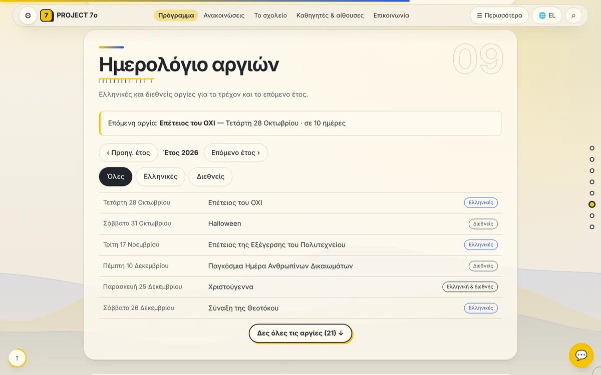
Αργίες Το ημερολόγιο αργιών.
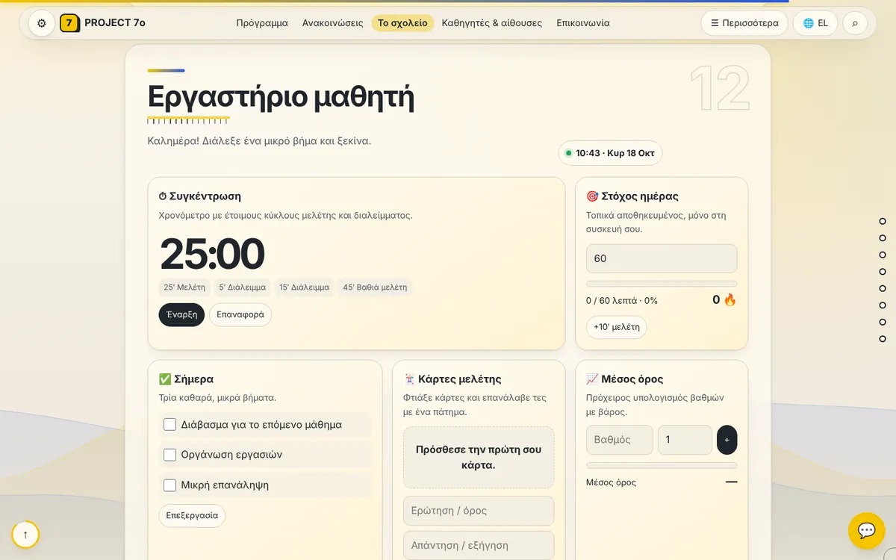
Εργαστήριο Χρονόμετρο μελέτης, στόχος ημέρας, κάρτες μελέτης.
Ελληνικά, αγγλικά, γερμανικά, ισπανικά, ρωσικά, αλβανικά, περσικά, εβραϊκά, γαλλικά, κινεζικά, χίντι, αραβικά, μπενγκάλι, πορτογαλικά και ινδονησιακά: και οι δέκα πιο ομιλούμενες γλώσσες του κόσμου. Τα περσικά, τα εβραϊκά και τα αραβικά γράφονται από δεξιά προς τα αριστερά, και η σελίδα γυρίζει ολόκληρη.
Ποια ώρα είναι τώρα, πότε χτυπάει το επόμενο κουδούνι, με γραμμή που γεμίζει.
Γράφεις το τμήμα και βλέπεις τι μάθημα έχεις τώρα και όλη την εβδομάδα.
Για ερωτήσεις και ασκήσεις. Το κλειδί του μένει στον server, όχι στον browser.
Εγκαθίσταται σαν εφαρμογή στο κινητό και ανοίγει χωρίς ίντερνετ.
Σύνδεσμοι για τους χώρους του PBworks, προστατευμένοι με κωδικό.
Ένα κουμπί για να μας πει κάποιος τι δεν δουλεύει.
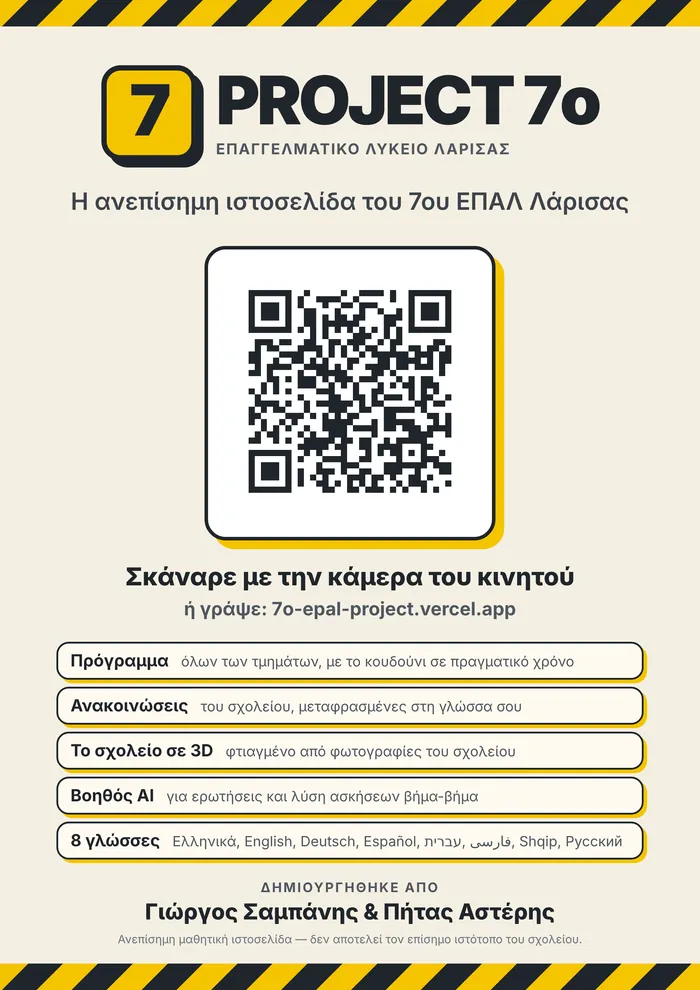
Μια αφίσα A4 με κωδικό QR, για να ανοίγει κανείς την ιστοσελίδα με την κάμερα του κινητού του.
Φτιαγμένο με HTMLCSSJavaScriptWebGLService WorkerVercel Functions
Τι χρειάζεται το έργο, με ποια σειρά και πότε.
Πού μπαίνει τι: μενού, τίτλος, κουμπιά, φωτογραφίες.
Χρώματα, γράμματα και κινήσεις που ταιριάζουν στο περιεχόμενο.
Γραμμένος και διορθωμένος από εμάς, με το AI ως εργαλείο. Ελεγμένος σε κινητά και υπολογιστές.
Ανεβαίνει, και η επόμενη έκδοση ξεκινά από εδώ.
Ο Αστέρης οργανώνει τι φτιάχνεται και πότε. Ο Γιώργος το σχεδιάζει και γράφει τον κώδικα. Πατήστε μια κάρτα για να τη γυρίσετε.
Τέσσερα μικρά πράγματα για να παίξετε. Και να δείτε πώς δουλεύουμε.
0/3
Ο κώδικας θέλει να προσθέσει τιμές, αλλά δεν δουλεύει. Πατήστε τις γραμμές που φταίνε.
function total(prices) { sum += prices[i]; }}Συμβουλή: κοιτάξτε τα εισαγωγικά, το <= και τα γράμματα.
Κάθε έργο ξεκινά από μια γραμμή. Ζωγραφίστε μία: θα την ξαναζωγραφίσει μόνη της και θα βάλει τελεία.
Οι αληθινές εντολές που τρέχουν πριν φύγει μια έκδοση του Giannotas.
Οι εντολές: έλεγχος των συναρτήσεων (20 στους 20 πέτυχαν), έλεγχοι στον browser (34 στους 34), έλεγχος συνδέσμων (κανένας χαλασμένος).
Μετρημένα αυτή τη στιγμή στη δική σας συσκευή, όχι γραμμένα από πριν.
Ο Γιώργος Σαμπάνης, που γράφει τον κώδικα, και ο Αστέρης Πήτας, που οργανώνει τα έργα. Είμαστε από τη Λάρισα.
Όχι. Το AI είναι εργαλείο που μας κάνει γρηγορότερους. Τον κώδικα τον ελέγχουμε εμείς: κάνουμε debug, βρίσκουμε τα λάθη και τα διορθώνουμε, και δοκιμάζουμε κάθε σελίδα σε κινητά και υπολογιστές.
Ελληνικά και αγγλικά, όπως αυτή η σελίδα, και όσες ακόμα χρειάζονται: το PROJECT 7ο έχει 15.
Πρώτα στο κινητό. Κάθε σελίδα ελέγχεται από τα μικρότερα κινητά, 320 pixels, μέχρι τις μεγάλες οθόνες.
Ναι. Ανοίγει μόνο με HTTPS, έχει αυστηρή πολιτική ασφαλείας, δεν έχει διαφημίσεις τρίτων ούτε εργαλεία παρακολούθησης, και η φόρμα δεν αποθηκεύει τίποτα.
Γιατί τελειώνουμε κάθε έργο μέχρι την τελευταία τελεία. Και γιατί κάθε τίτλος σε αυτή τη σελίδα περιμένει τη δική του: την κόκκινη τελεία που κατεβαίνει μαζί σας.
Θέλετε να πείτε κάτι για κάποιο από τα έργα μας, ή απλώς ένα γεια; Ένα μήνυμα αρκεί.
Το μήνυμα είναι έτοιμο. Από πού θέλετε να το στείλετε;
Πηγαίνει στο tipsandgreeks@gmail.com. Αν αντιγράψετε το μήνυμα, το επικολλάτε σε όποιο email θέλετε.